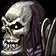
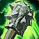

Übersicht
Level13–18
GebietIronforge / Dun Morogh
KategorieAllianzgebiet
TypForever
Eingang: Beneath the High Seat, Old Ironforge. Die Gebietskarte findest du im Reiter „Gebietskarte“.
Bosse & Loot
Icons: bekannte Item-IDs nutzen Original-Wowhead-Icons; übrige Einträge bekommen mindestens ein passendes Slot-/Waffenicon statt eines kaputten Bildes.

Faldrim Anvilmar
3 bekannte Loot-Einträge
Magmatus
3 bekannte Loot-Einträge

Plunder
3 bekannte Loot-Einträge
Durgen Dirgehammer
3 bekannte Loot-Einträge
Dungeonquests
Quelle: Wowhead Forever „Every Dungeon Quest“, aktualisiert 31.10.2026. Beta-Dungeons können noch unvollständig sein.
Allianzquests
Important Heirlooms · Level 10Start: Old Ironforge – Thom Filch /way 32.6 44.6
The Restless Dead · Level 10Start: Old Ironforge – Afadra Dunwall /way 64.8 58.4
Old Ironforge Incursion · Level 9Start: Dun Morogh – Earthseer FarsenFührt zur Underground Map
The Treaty of Understanding · Level 9Start: Im Dungeon – Reliquary of Kings
An Ancient Grudge · Level 10Start: Im Dungeon – Anvilmar's Rest
Hordequests
Keine fraktionsspezifischen Quests in der lokalen Liste. Siehe Wowhead-Quelle unten.
Neutral / Klasse
Keine fraktionsspezifischen Quests in der lokalen Liste. Siehe Wowhead-Quelle unten.
Ironforge / Dun Morogh – Dungeon-Eingang

Marker: Beneath the High Seat, Old Ironforge
Die Karte zeigt das komplette Gebiet, nicht mehr nur eine schematische Platzhalterfläche.
Die Karte zeigt das komplette Gebiet, nicht mehr nur eine schematische Platzhalterfläche.